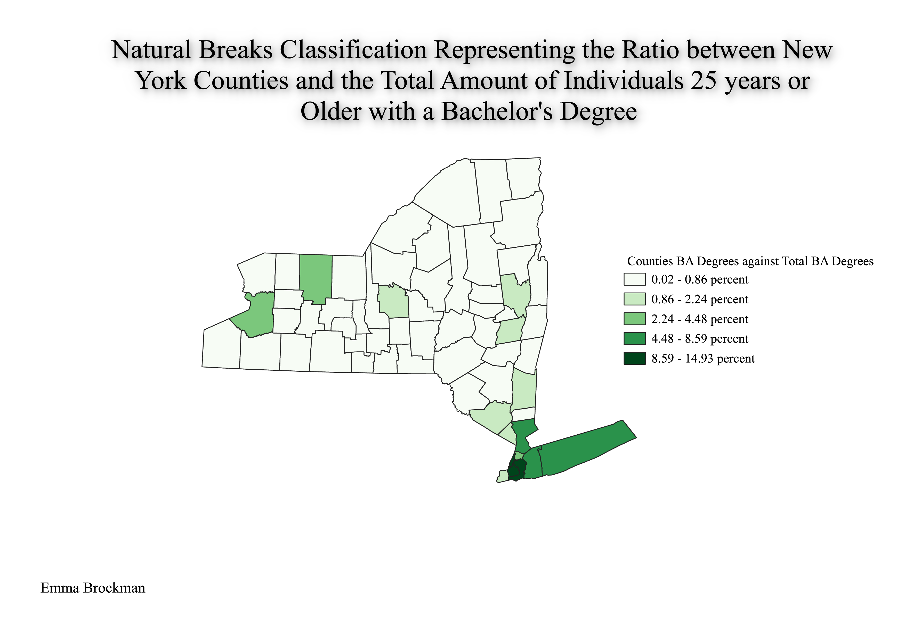
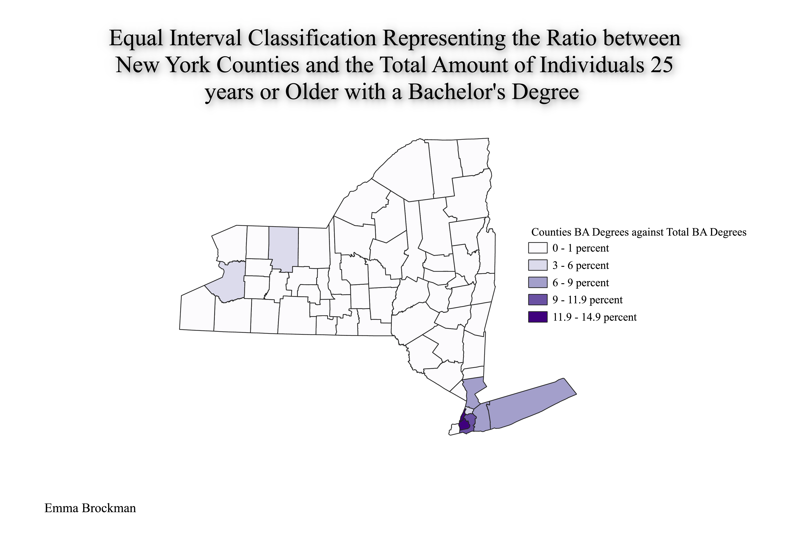
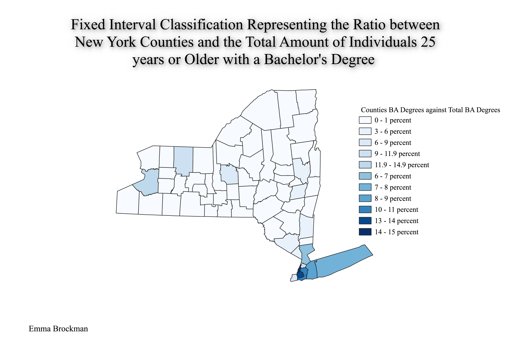

Hey! Welcome to my HW6 pt.2 page.
I created a ratio between the total amount of individuals 25 years
or older with a Bachelor's Degree in the state of New York and said degrees
by county. I created this ratio because for one, it seemed the most logical to analyze, and two,
I wanted to see which NY counties had the highest percentage of degrees. Based off of my previous knowledge,
I assumed the more densely populated areas would have a higher amount of degrees than areas that are typically more rural farmland.
See for yourself just what counties fair the best!
The first map I created was just a normal natural breaks map. This classification scheme is good for basic classification measures as it arranges the data in a way that seems most "natural" for the set. Essentially, this means that the data is being arranged in a way the software sees the most commonalities and is then translating it to the classification. This can be good for data that is naturally split well, but can provide less than ideal results when data is skewed or not very consistent.

This second map was created using equal intervals. This classification systems can be beneficial to use when one has an immense amount of similar data that they want to represent. This means the data is arranged as an equal split for each category. This data increments by 3% each time. This can be benefical to utilize, like previously mentioned, when a dataset has a lot of values that can be reprsented equally, but inefficient to utilize when there are outliers, or limited amounts of data for certain categories (this map example).

Finally, this last map was created using fixed intervals. This was my least favorite of the classification types as it is really simple. Basically, this can be utilized to represent data at any interval one may want. The arrangement of data is purely set by an individual for each category. Like the equal interval, the fixed interval also increments on a set value each time. This could be really good for representing a large amount of data that one needs to break down into many different categories, or on the flip side, a large amount of data that needs to be analyzed on a larger scale by creating large categories. Again, outliers may be an issue and could skew the categories.
